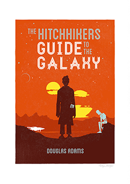
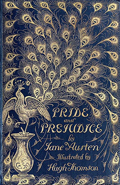

Aigerim Kalysheva
Student @Le Wagon
Graduated as Robotics, worked as an Engineer and Researcher. Now becoming a FullStack Developer
Some of my favourite books
|  |
The Hitchhiker's Guide to the Galaxy by Douglas Adams (1985)Seconds before Earth is demolished to make way for a galactic freeway, Arthur Dent is plucked off the planet by his friend Ford Prefect, a researcher for the revised edition of The Hitchhiker's Guide to the Galaxy who, for the last fifteen years, has been posing as an out-of-work actor. |
Flowers for Algernon by Daniel Keyes (1966)Short story. The story is told through a series of journal entries written by the story's protagonist, Charlie Gordon, a man with an IQ of 68 who works a menial job as a janitor at Donnegan's Plastic Box Company. He is selected to undergo an experimental surgical technique to increase his intelligence. |
|
|  |
Pride and Prejudice by Jane Austin (1813)Pride and Prejudice is a humorous story of love and life among English gentility during the Georgian era. Mr Bennet is an English gentleman living in Hartfordshire with his overbearing wife. The Bennets 5 daughters; the beautiful Jane, the clever Elizabeth, the bookish Mary, the immature Kitty and the wild Lydia. |
About this page
This page has been coded during the FullStack program @LeWagon. That was probably the best experience of my entire life.